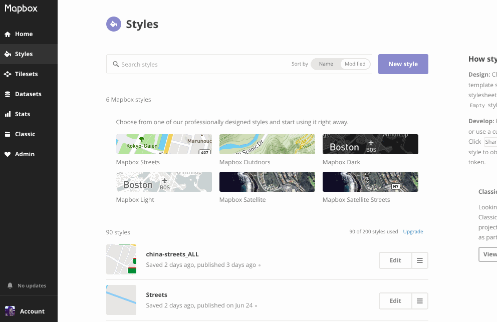
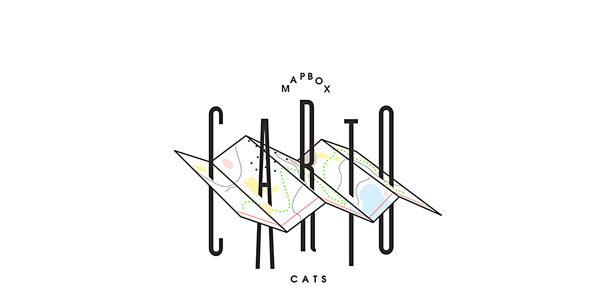
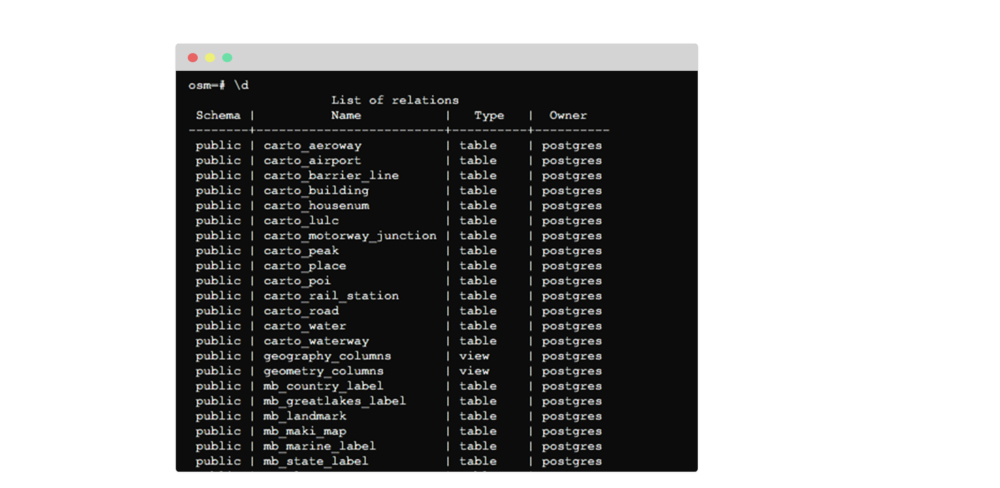
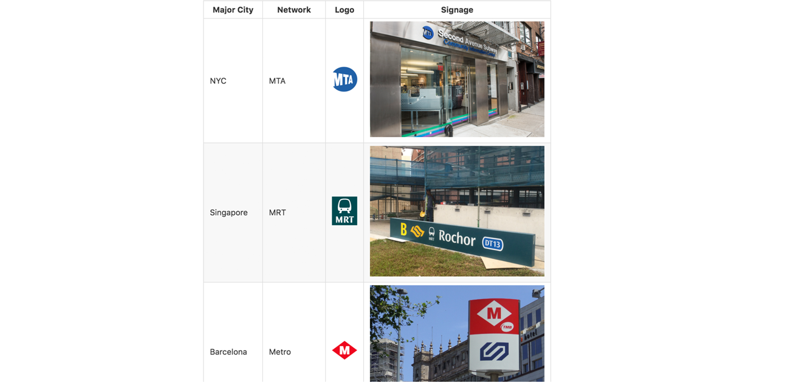
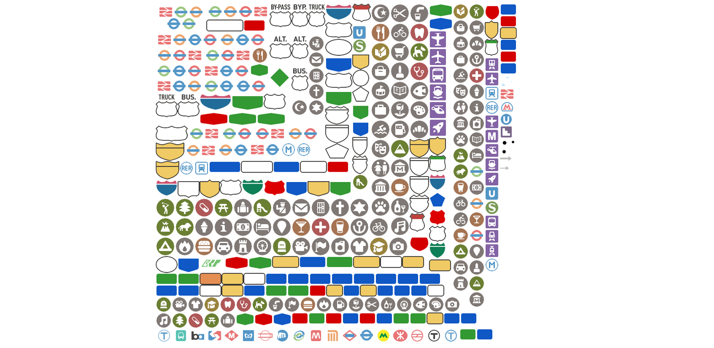
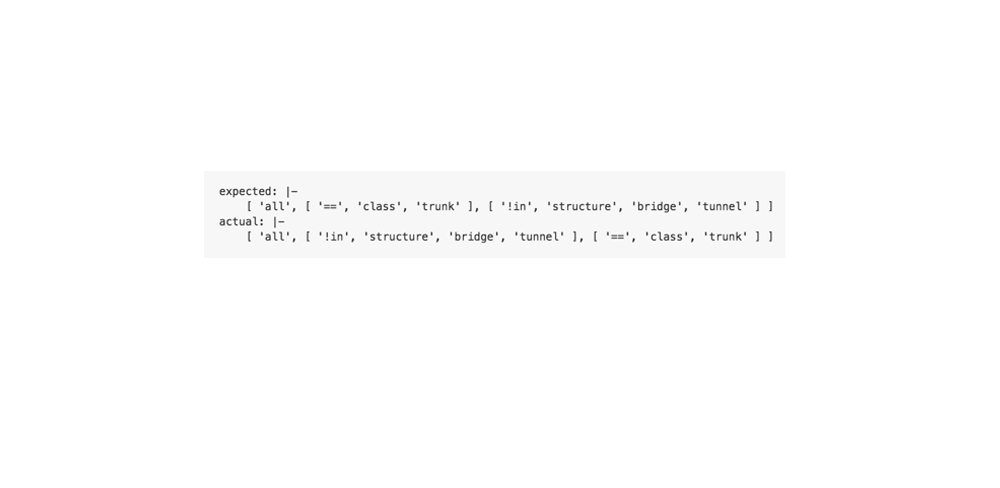

Four types of Mapbox maps.


AJ — @ajashton
Amy Lee — @amyleew
Andreas — @andreasviglakis
Emily DuBois — @emilymdubois
Ian Villeda — @ian29
Nat — @slaughternat
Nicki — @nickidlugash
Xiaowei — @xrwang

Transit + highway shield custom icons



 map design
map design